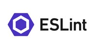

The Web
Categorie
Full Stack Development
Profiel Full Fledged Front End Web Developer
 Een Front End Web Developer richt zich op de presentatielaag, meestal het gedeelte wat gebruiker ziet en mee interacteert, van website of App, of stuk web functionaliteit. Hierbinnen bedient developer zich met tools die in staat stellen om alles te maken wat zich nu al manifesteert, of er nog niet is, en dus moet worden bedacht of gemaakt.
Een Front End Web Developer richt zich op de presentatielaag, meestal het gedeelte wat gebruiker ziet en mee interacteert, van website of App, of stuk web functionaliteit. Hierbinnen bedient developer zich met tools die in staat stellen om alles te maken wat zich nu al manifesteert, of er nog niet is, en dus moet worden bedacht of gemaakt.
Waar de scope van Basic Front End Web Developer is beschreven in dat profiel, hebben de woorden Full Fledged betrekking op "het hele werkveld" van front end development en daarvoor benodigde kennis, kunde en vaardigheden waaronder meer techniek en ook managerial aspecten.
→ zie: Wikipedia Front End Web Development
Taken
Profiel Basic Front End Web Developer wordt verondersteld. Voor Full Fledged komt erbij ontwikkelen alle front end Apps, eigen werk workflow management is optimaal, werken in teams en maken koppelingen naar back end API’s en werken met data. De Full Fledged Front End Web Developer beheerst navolgende tools adequaat om taken te kunnen verrichten.
- Bootstrap
-
Bootstrap is een free open source software verzameling hulpmiddelen (framework) voor het maken van websites en webtoepassingen. Het bevat sjablonen gebaseerd op HTML en CSS voor typografie, formulieren, knoppen, navigatie en andere interfaceonderdelen. Het bevat ook JavaScript extensies. Het Bootstrap framework is bedoeld om webontwikkeling te vereenvoudigen.
→ zie: Wikipedia Bootstrap
→ zie: Website Bootstrap tbv downloadBootstrap stelt gebruiker in staat om "ready to go" snel resultaten te behalen, het geeft een goede stabiele "clean" design. Prima tool voor developer die werkt zonder User Experience (UX) designer en illustrator. Voor developer die zich focust op inhoud en business logics in de back end, met stroomlijning van CI/CD (continious integration en continious development) met testen enz. Bootstrap standaardiseert development en dat geeft in teamverband en later beheer van website of App een "one way of working" wat veel waard is.
Gebruik van Bootstrap zorgt voor overhead zodat gehele website of App qua kb's in omvang vele malen groter is dan development op basis van plain vanilla CSS. En dat zou kunnen leiden tot performance verlies vanwege loadtime. Om development met Bootstrap te stroomlijnen (to minify) is er tool PurgeCSS. En er is een tool Bower om niet gebruikte afhankelijkheden op te sporen en verwijderen. Specifiek voor NL is omvang cq mogelijke performance verlies niet zo'n issue want moderne technische infrastructuur zoals glasvezel enz. heeft hoge troughput capaciteit en veel zo niet alle gebruikers hebben moderne apparatuur.
- TypeScript
-
 TypeScript (TS) is een free open source programmeer taal. Het is een strikte superset van JavaScript (JS), en voegt typing en object georiënteerd programmeren toe aan de JS. TS kan gebruikt worden voor de ontwikkeling van JS toepassingen voor client side of server side met runtime environment is Node.js.
TypeScript (TS) is een free open source programmeer taal. Het is een strikte superset van JavaScript (JS), en voegt typing en object georiënteerd programmeren toe aan de JS. TS kan gebruikt worden voor de ontwikkeling van JS toepassingen voor client side of server side met runtime environment is Node.js.
→ zie: Wikipedia TypeScript
→ zie: Website TypeScript tbv downloadTS is ontworpen voor de ontwikkeling van grote toepassingen en transcompileert naar JS. Omdat het een superset is van JS, is elk bestaand JS programma automatisch ook een geldig TS programma. TS ondersteunt klassen volgens ECMAScript 2015.
- ESLint
-
 ESLint is een code analyse tool voor het identificeren van problematische patronen in JavaScript code. Rules in ESLint zijn configureerbaar en aangepaste rules kunnen worden gedefinieerd en geladen. ESLint behandelt zowel code kwaliteit als codeer stijl problemen.
→ zie: Wikipedia ESLint
→ zie: Website ESLint getting startedESLint ondersteunt de huidige standaarden van ECMAScript en experimentele syntaxis van concepten voor toekomstige standaarden. Code met behulp van JSX of TypeScript kan ook worden verwerkt wanneer betreffende plugin of transpiler wordt gebruikt.
ESLint kan worden geinstalleerd via Node.js als plugin bij VS Code en gebruikt worden bij development in library React, en frameworks Vue.js en Angular en andere omgevingen.
→ zie: YouTube Videotorial ESLint
- Webpack
-
 Webpack is een free open source JavaScript modulebundler. Naast JavaScript kan het ook front end assets zoals HTML, CSS en afbeeldingen bundelen met bijbehorende plugins. Webpack verpakt afzonderlijke modules en hun afhankelijkheden en plugins en genereert gesorteerd naar tool een vaste bundel als één geheel.
Webpack is een free open source JavaScript modulebundler. Naast JavaScript kan het ook front end assets zoals HTML, CSS en afbeeldingen bundelen met bijbehorende plugins. Webpack verpakt afzonderlijke modules en hun afhankelijkheden en plugins en genereert gesorteerd naar tool een vaste bundel als één geheel.
→ zie: Wikipedia Webpack
→ zie: Website Webpack getting startedWebpack kan worden geinstalleerd via Node.js en biedt ook een ingebouwde ontwikkeling server genaamd Webpack Dev Server die kan worden gebruikt als een HTTP server voor het aanbieden van bestanden tijdens het ontwikkelen. Het biedt ook de mogelijkheid om hot module vervanging te gebruiken.